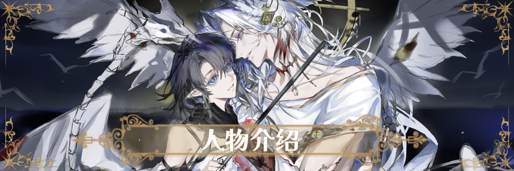
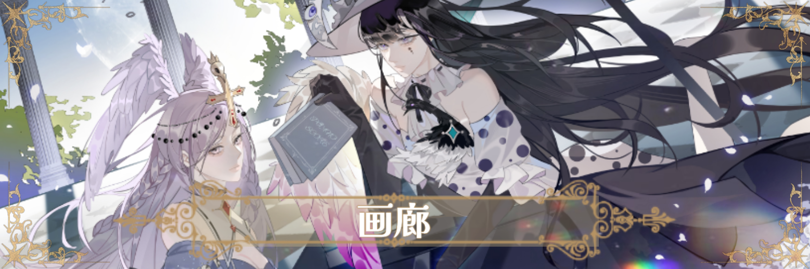

The Masterless Crown
🎇欢迎来到——艾德瓦尔🎇
世界观概述
“比起永恒不朽，轮回与遗忘才是生命真正的延续。”
——《流浪者之歌》
🎇欢迎来到——艾德瓦尔🎇
这是一片被造物主格外眷顾的土地，作为礼物送给了祂最爱的孩子——人类。
无数来自其他世界的神明们穿越界门来到这里，想要一睹人类的真貌。
代表“七宗罪”和“七德行”的宝珠碎片散落凡界，是新世界的钥匙，是造物主的恩惠。
无论是神明，人类，亦或是莱塔霍斯都想要得到它们。
当平衡的天秤被施加额外的砝码，秤砣倾斜，最终谁能加冕为王？
关键词：
西幻丨东方玄幻丨神话丨世界重启
【食用提示】
主世界观是西方神话向，东方神明出场较少。部分内容涉及社会、人伦道德，不适请随意跳过，不会影响其他部分阅读。
因为三次很忙，不定时更新，进度较慢。历史苦手，部分时间逻辑待完善。全平台世界观同名。
如果不确定从何处开始了解艾德瓦尔，推荐先阅读〔目录&前言〕
bl和bg cp参半，自行避雷；大部分神祇/教会都为原创；
涉及故事主线的OC共30个，下拉没有找到的多半是在完善修正；
暂时就想到这些～感谢喜欢！
愿您无上加冕

